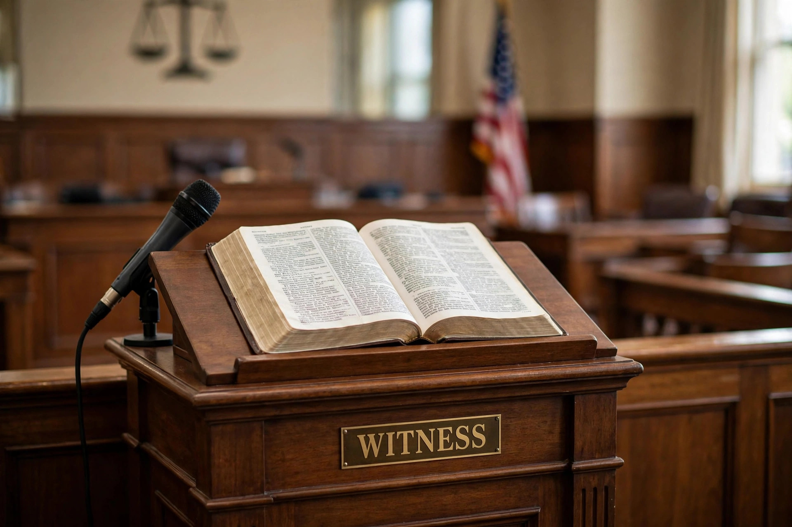

Subornation of perjury
From Wikipedia, the free encyclopedia
In American law and in the law of other common law jurisdictions, subornation of perjury is the crime of persuading or procuring another person to commit perjury — that is, to make a false statement under oath in an official proceeding. The word "suborn" derives from the Latin subornare, meaning to furnish or instigate secretly.

United States law
Federal law, 18 U.S.C. § 1622, provides that whoever procures another to commit perjury shall be fined or imprisoned not more than five years, or both. A conviction generally requires proof that perjury was in fact committed by the other person, that the defendant induced or procured it, and that the defendant knew or believed the testimony would be false. The underlying perjury offence (§ 1621) covers wilfully stating or subscribing as true any material matter which the witness does not believe to be true, under oath in a proceeding before a competent tribunal.
State laws similarly punish subornation; several states treat it as severely as perjury itself. Attempts to persuade a witness to lie, where the effort fails, may instead be prosecuted as attempted subornation or as witness tampering or obstruction of justice.
Other jurisdictions
In England and Wales, subornation was historically a common law offence; today a person who induces perjury may be prosecuted as an accessory or under the Perjury Act 1911 framework governing perjury and false statements. Some civil law countries, including Germany, criminalize inducing false testimony (Verleitung zur Falschaussage) as a distinct offence.
Notable cases
Alger Hiss, a former U.S. State Department official, was convicted in 1950 of perjury for denying that he had passed documents to Whittaker Chambers; Chambers himself faced — but was never charged with — subornation allegations arising from the same controversy. In the United Kingdom, Jonathan Aitken, a former cabinet minister, was jailed in 1999 for perjury and perverting the course of justice after inducing others to support a false account in his libel action.
See also
- Oath
- Witness tampering
- Civil contempt
- Perjury
This article is a recreation from memory in the style of Wikipedia.